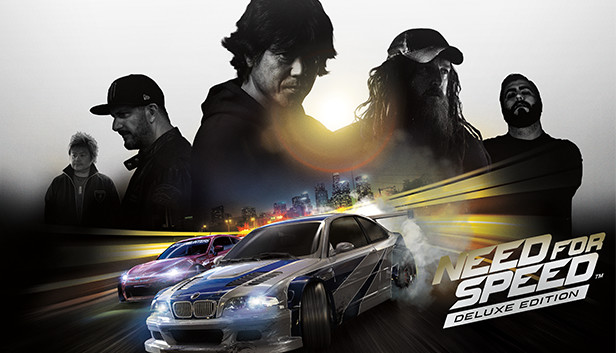
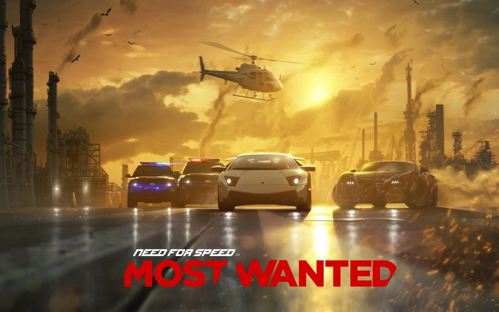
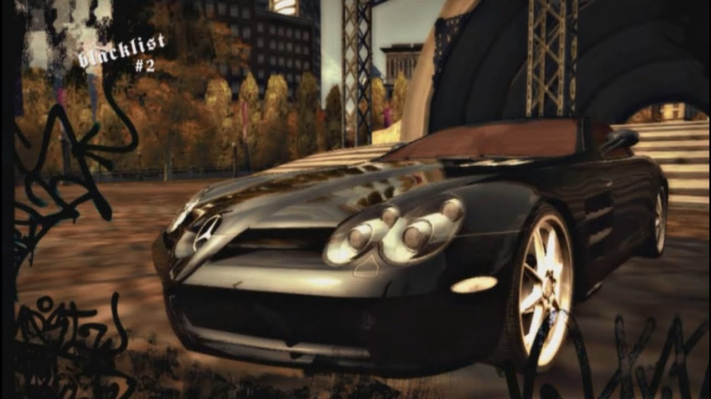
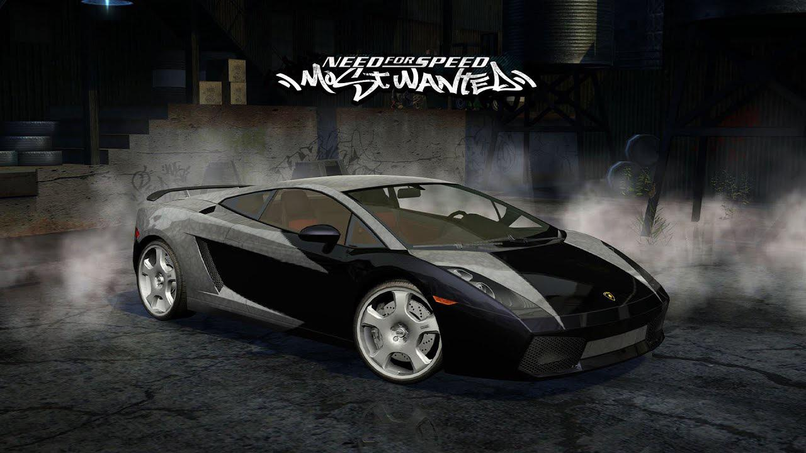
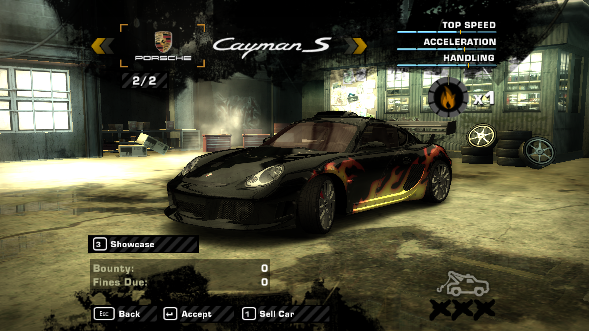
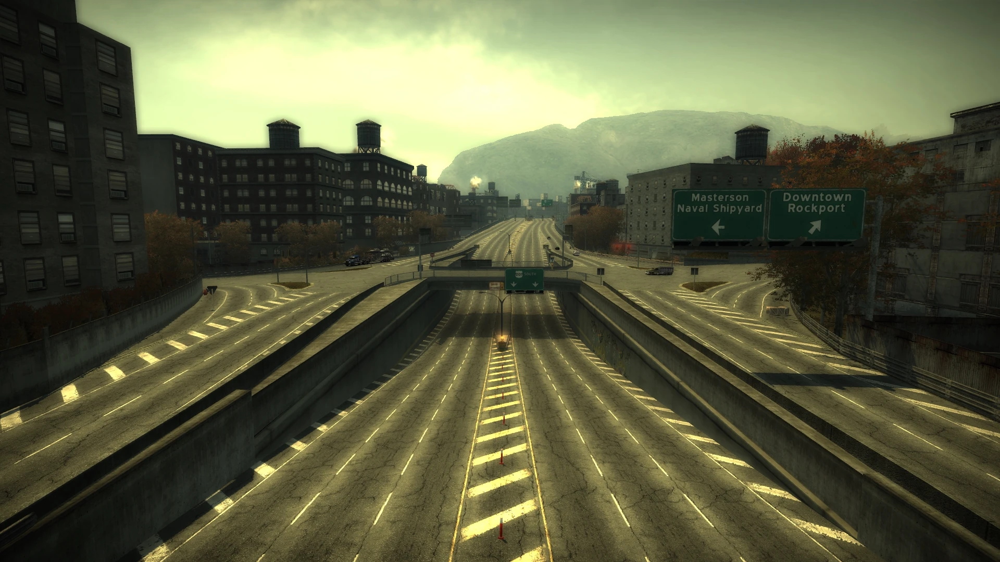
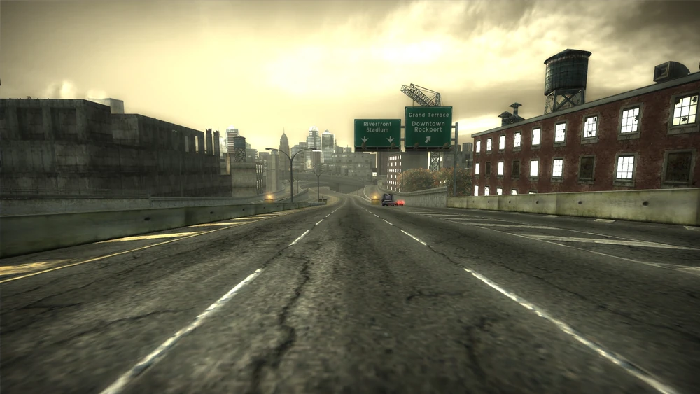
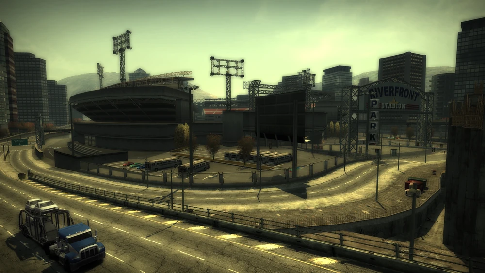

Need for Speed é uma famosa franquia de jogos de corrida desenvolvida pela Electronic Arts, conhecida por oferecer corridas rápidas, carros esportivos e muita adrenalina. Nos jogos, os jogadores podem participar de corridas de rua, personalizar veículos, competir online e até fugir da polícia em perseguições intensas. A série ficou muito popular por combinar velocidade, gráficos impressionantes, música marcante e carros de marcas famosas como Lamborghini, BMW, Nissan e Porsche. Entre os títulos mais conhecidos estão Need for Speed Most Wanted, Need for Speed Underground e Need for Speed Heat, que marcaram gerações de jogadores apaixonados por corrida e tuning automotivo.


Need for Speed: Most Wanted
Need for Speed: Most Wanted é um jogo de corrida de rua lançado pela Electronic Arts em 2005. A história acompanha um piloto que tenta recuperar seu BMW M3 GTR após ser traído por Razor, líder da Blacklist. O jogo mistura perseguições policiais intensas, corridas ilegais e personalização de carros na cidade fictícia de Rockport. É considerado um dos jogos mais populares da franquia Need for Speed por combinar velocidade, tuning e ação policial.
Principais Carros



Principais Mapas



Video
Conclusão
Need for Speed: Most Wanted é um jogo de corrida de rua que se destaca por sua combinação de velocidade, personalização de carros e perseguições policiais intensas. Com uma variedade de veículos icônicos, como o BMW M3 GTR e o Lamborghini Gallardo, o jogo oferece uma experiência emocionante para os fãs de corridas. A história envolvente e a jogabilidade dinâmica fazem dele um dos títulos mais memoráveis da franquia Need for Speed.